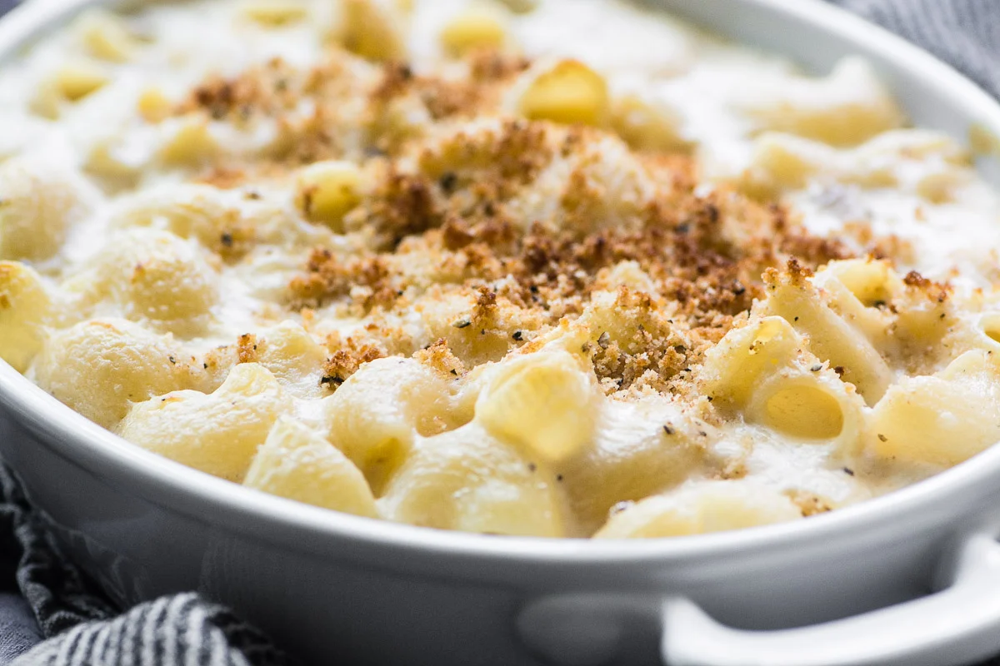

Home
Truffle Mac

Indulge in the rich, creamy decadence of Truffle Mac and Cheese a luxurious twist on a beloved classic. This recipe combines velvety cheese sauce, perfectly cooked pasta, and the earthy aroma of truffle oil for an unforgettable comfort food experience. Whether served as a side or the star of the meal, this dish is the perfect balance of gourmet flavor and cozy satisfaction.
Ingredient List
- 1 lb elbow macaroni (or pasta of choice)
- 4 tbsp unsalted butter
- 2 tbsp all-purpose flour
- 2 cups whole milk
- 1 cup heavy cream
- 2 cups shredded sharp cheddar cheese
- 1 cup shredded Gruyère cheese
- ½ cup shredded Parmesan cheese
- 1 tsp Dijon mustard (optional)
- 1 tsp garlic powder
- Salt and freshly ground black pepper, to taste
- 1-2 tbsp truffle oil (white or black, to taste)
- ½ cup panko breadcrumbs (optional, for topping)
- 1 tbsp chopped fresh parsley (for garnish)